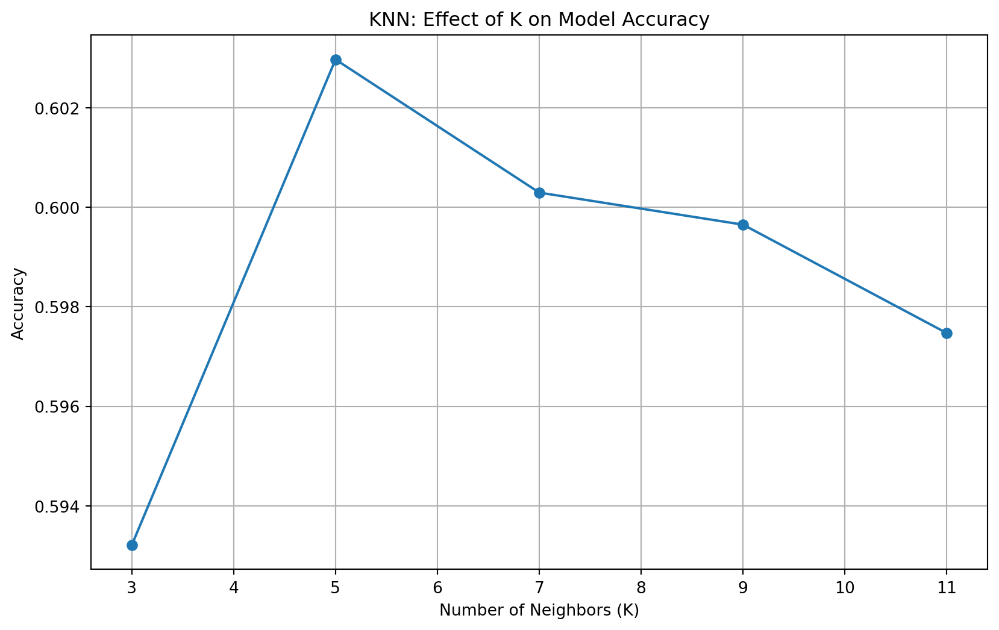

import pandas as pd
import numpy as np
import matplotlib.pyplot as plt
import seaborn as sns
from sklearn.model_selection import train_test_split
from sklearn.neighbors import KNeighborsClassifier
from sklearn.tree import DecisionTreeClassifier
from sklearn.metrics import accuracy_score
from sklearn.tree import plot_tree
from sklearn.preprocessing import StandardScalerIntroduction
In this week’s discussion section, we will run and tune a KNN and Decision Tree model. We will see how our models perform differently, as well as attempt to improve them! Given the variables listed below, we are going to build our model to predict which National Park a given taxon is part of.
Data
Our data for this discussion section comes from a tidytuesday project. You can access the data on this google sheet and download as a CSV. The dataset contains National Park species obserations for the 15 most popular National Parks in the U.S. The user manual provided by the NPS cotains information on the different variables. Check out the table below with the different variables we will use this week.
| Feature | Description |
|---|---|
| CategoryName | Broad taxanomic grouping |
| Order | Order of Species |
| Family | Taxanomic family |
| GRank | Global Rank, An assesment of the level of rarity or abundance of a taxon |
| ParkName | National Park Name |
| Sensitive | True/False variable on whether or not the taxon is sensitive |
| Nativeness | True/False variable on whether or not the taxon is native to the park |
| Abundance | Categorical variable specifying whether the taxons are rare, common, or abundant |
| Observations | The number of times the taxon has been observed |
Time to dive in to our models!
1. Prepare the data
Read in the national park data and prepare your data from your models. We want our target variable to be ParkName, and all other variables in the table above to be our features. Then, split and scale the data.
# Read in national park data
np_df = pd.read_csv('../data/national_park_species.csv')
np_df = np_df.drop(np_df.columns[0], axis=1)
pd.set_option('display.max_columns', None)
np_df.head()| ParkCode | ParkName | CategoryName | Order | Family | TaxonRecordStatus | SciName | CommonNames | ParkAccepted | Sensitive | RecordStatus | Occurrence | OccurrenceTags | Nativeness | NativenessTags | Abundance | NPSTags | ParkTags | References | Observations | Vouchers | ExternalLinks | TEStatus | StateStatus | OzoneSensitiveStatus | GRank | SRank | |
|---|---|---|---|---|---|---|---|---|---|---|---|---|---|---|---|---|---|---|---|---|---|---|---|---|---|---|---|
| 0 | ACAD | Acadia National Park | Mammal | Artiodactyla | Cervidae | Active | Alces alces | Moose | True | False | Approved | Present | NaN | Native | NaN | Rare | Resident | NaN | 11 | 1 | 0 | NaN | 50 | NaN | NaN | G5 | ME: S5 |
| 1 | ACAD | Acadia National Park | Mammal | Artiodactyla | Cervidae | Active | Odocoileus virginianus | Northern White-tailed Deer, Virginia Deer, Whi... | True | False | Approved | Present | NaN | Native | NaN | Abundant | NaN | NaN | 20 | 0 | 0 | NaN | 50 | NaN | NaN | G5 | ME: S5 |
| 2 | ACAD | Acadia National Park | Mammal | Carnivora | Canidae | Active | Canis latrans | Coyote, Eastern Coyote | True | False | Approved | Present | NaN | Non-native | NaN | Common | NaN | NaN | 8 | 1 | 0 | NaN | SC | NaN | NaN | G5 | ME: S5 |
| 3 | ACAD | Acadia National Park | Mammal | Carnivora | Canidae | Active | Canis lupus | Eastern Timber Wolf, Gray Wolf, Timber Wolf | True | False | Approved | Unconfirmed | NaN | Native | NaN | NaN | NaN | NaN | 2 | 0 | 0 | NaN | E | NaN | NaN | G5 | ME: SH |
| 4 | ACAD | Acadia National Park | Mammal | Carnivora | Canidae | Active | Vulpes vulpes | Black Fox, Cross Fox, Eastern Red Fox, Fox, Re... | True | False | Approved | Present | NaN | Unknown | NaN | Common | Breeder | NaN | 16 | 0 | 0 | NaN | NaN | NaN | NaN | G5 | ME: S5 |
# Encode categorical variables
for col in ['CategoryName', 'Order', 'Family', 'GRank', 'ParkName', 'Sensitive', 'Nativeness', 'Abundance','Observations', 'GRank']:
np_df[f"{col}_cat"] = np_df[col].astype('category').cat.codes
# Split data into X and y
X = np_df[['CategoryName_cat', 'Order_cat', 'Family_cat', 'GRank_cat', 'Sensitive_cat', 'Nativeness_cat', 'Abundance_cat','Observations_cat', 'GRank_cat']]
y= np_df['ParkName_cat']
# Split data into training and testing
X_train, X_test, y_train, y_test = train_test_split(X,y, test_size = 0.33, random_state = 42)
# Standardize the predictors
scaler = StandardScaler()
X_train_scaled = scaler.fit_transform(X_train)
X_test_scaled = scaler.transform(X_test)2. Create a KNN Classifier
After running an untuned model, iterate over different values of K to see which performs best. Then, visualize how your accuracy changes wtih a varying K.
# Initialize KNN classiier
knn = KNeighborsClassifier()
knn.fit(X_train_scaled, y_train)
y_pred = knn.predict(X_test_scaled)# Calculate accuracy
accuracy = accuracy_score(y_test, y_pred)
print(accuracy)0.6029747149231532### Tune a KNN Model and Visualize results
def knn():
# Different k values to iterate over
k_values = [3, 5, 7, 9, 11]
accuracies = []
# Create KNN model for each value of K, fit/predict, and calculate accuracies
for k in k_values:
knn = KNeighborsClassifier(n_neighbors=k)
knn.fit(X_train_scaled, y_train)
# Make predictions and calculate accuracy
y_pred = knn.predict(X_test_scaled)
accuracy = accuracy_score(y_test, y_pred)
accuracies.append(accuracy)
print(f"K={k} - Accuracy: {accuracy:.3f}")
# Visualize K against accuracy
plt.figure(figsize=(10,6))
plt.plot(k_values, accuracies, marker='o')
plt.xlabel('Number of Neighbors (K)')
plt.ylabel('Accuracy')
plt.title('KNN: Effect of K on Model Accuracy')
plt.grid(True)
plt.show()
knn()K=3 - Accuracy: 0.593
K=5 - Accuracy: 0.603
K=7 - Accuracy: 0.600
K=9 - Accuracy: 0.600
K=11 - Accuracy: 0.597
3. Create a Decision Tree
After running an untuned model, iterate over different max depths for your decision tree to determine which performs best. Then,create a decision tree visual using plot_tree. Lastly, find the most important features using .feature_importances_.
# Initialize Decision Tree classiier
dt = DecisionTreeClassifier()
dt.fit(X_train_scaled, y_train)
y_pred = dt.predict(X_test_scaled)
# Calculate accuracy
accuracy = accuracy_score(y_test, y_pred)
print(accuracy)0.636192364898364# Max depths to iterate over
max_depths = [2, 3, 4, 5]
accuracies = []
# Create decision tree model for different depths and report accuracies
for depth in max_depths:
dt = DecisionTreeClassifier(max_depth=depth, random_state=42)
dt.fit(X_train_scaled, y_train)
# Make predictions and calculate accuracy
y_pred = dt.predict(X_test_scaled)
accuracy = accuracy_score(y_test, y_pred)
accuracies.append(accuracy)
print(f"Max Depth: {depth} - Accuracy: {accuracy:.3f}")Max Depth: 2 - Accuracy: 0.466
Max Depth: 3 - Accuracy: 0.497
Max Depth: 4 - Accuracy: 0.532
Max Depth: 5 - Accuracy: 0.547Visualize Models
# Create and fit model with best depth
dt_best = DecisionTreeClassifier(max_depth=5, random_state=42)
dt_best.fit(X_train_scaled, y_train)
# Create the mapping from numeric classes to descriptive names
class_mapping = dict(zip(dt_best.classes_, np_df.ParkName.unique()))
# Convert class labels in dt.classes_ to strings using the mapping
class_names_str = [class_mapping[cls] for cls in dt_best.classes_]
# Plot decision tree
plt.figure(figsize=(12, 15), dpi=700)
plot_tree(dt_best, feature_names=X.columns, class_names= class_names_str,
filled=True, rounded=True)
plt.title("Decision Tree Visualization (max_depth = 5)")
plt.savefig('decision_tree.png')
plt.show()
Find important features
feature_importance = pd.DataFrame({
'feature': X.columns,
'importance': dt_best.feature_importances_
}).sort_values('importance', ascending=False)
print("\nFeature Importance:")
print(feature_importance)
Feature Importance:
feature importance
5 Nativeness_cat 0.705087
0 CategoryName_cat 0.126157
7 Observations_cat 0.092148
6 Abundance_cat 0.057482
1 Order_cat 0.009900
3 GRank_cat 0.008710
8 GRank_cat 0.000359
2 Family_cat 0.000159
4 Sensitive_cat 0.000000